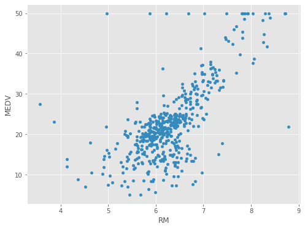
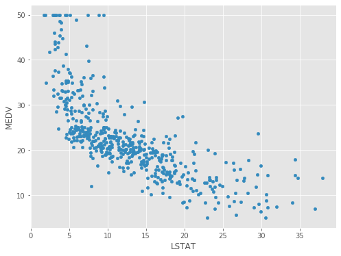

Be on touch for more models and projects


To understand the relationship among features (columns), a correlation matrix is very useful in the Exploratory data analysis. Correlation measures linear relationships between variables. We can construct a correlation matrix to show correlation coefficients between variables. It is symmetric where each element is a correlation coefficient ranging from -1 and 1. A value near 1 (resp. -1) indicates a strong positive (resp. negative) correlation between variables. We can create a correlation matrix using the "corr" function
corr_matrix=boston.corr().round(2)
corr_matrix
| CRIM | ZN | INDUS | CHAS | NOX | RM | AGE | DIS | RAD | TAX | PTRATIO | B | LSTAT | MEDV | |
|---|---|---|---|---|---|---|---|---|---|---|---|---|---|---|
| CRIM | 1.00 | -0.20 | 0.41 | -0.06 | 0.42 | -0.22 | 0.35 | -0.38 | 0.63 | 0.58 | 0.29 | -0.39 | 0.46 | -0.39 |
| ZN | -0.20 | 1.00 | -0.53 | -0.04 | -0.52 | 0.31 | -0.57 | 0.66 | -0.31 | -0.31 | -0.39 | 0.18 | -0.41 | 0.36 |
| INDUS | 0.41 | -0.53 | 1.00 | 0.06 | 0.76 | -0.39 | 0.64 | -0.71 | 0.60 | 0.72 | 0.38 | -0.36 | 0.60 | -0.48 |
| CHAS | -0.06 | -0.04 | 0.06 | 1.00 | 0.09 | 0.09 | 0.09 | -0.10 | -0.01 | -0.04 | -0.12 | 0.05 | -0.05 | 0.18 |
| NOX | 0.42 | -0.52 | 0.76 | 0.09 | 1.00 | -0.30 | 0.73 | -0.77 | 0.61 | 0.67 | 0.19 | -0.38 | 0.59 | -0.43 |
| RM | -0.22 | 0.31 | -0.39 | 0.09 | -0.30 | 1.00 | -0.24 | 0.21 | -0.21 | -0.29 | -0.36 | 0.13 | -0.61 | 0.70 |
| AGE | 0.35 | -0.57 | 0.64 | 0.09 | 0.73 | -0.24 | 1.00 | -0.75 | 0.46 | 0.51 | 0.26 | -0.27 | 0.60 | -0.38 |
| DIS | -0.38 | 0.66 | -0.71 | -0.10 | -0.77 | 0.21 | -0.75 | 1.00 | -0.49 | -0.53 | -0.23 | 0.29 | -0.50 | 0.25 |
| RAD | 0.63 | -0.31 | 0.60 | -0.01 | 0.61 | -0.21 | 0.46 | -0.49 | 1.00 | 0.91 | 0.46 | -0.44 | 0.49 | -0.38 |
| TAX | 0.58 | -0.31 | 0.72 | -0.04 | 0.67 | -0.29 | 0.51 | -0.53 | 0.91 | 1.00 | 0.46 | -0.44 | 0.54 | -0.47 |
| PTRATIO | 0.29 | -0.39 | 0.38 | -0.12 | 0.19 | -0.36 | 0.26 | -0.23 | 0.46 | 0.46 | 1.00 | -0.18 | 0.37 | -0.51 |
| B | -0.39 | 0.18 | -0.36 | 0.05 | -0.38 | 0.13 | -0.27 | 0.29 | -0.44 | -0.44 | -0.18 | 1.00 | -0.37 | 0.33 |
| LSTAT | 0.46 | -0.41 | 0.60 | -0.05 | 0.59 | -0.61 | 0.60 | -0.50 | 0.49 | 0.54 | 0.37 | -0.37 | 1.00 | -0.74 |
| MEDV | -0.39 | 0.36 | -0.48 | 0.18 | -0.43 | 0.70 | -0.38 | 0.25 | -0.38 | -0.47 | -0.51 | 0.33 | -0.74 | 1.00 |
RM and MEDV are positively correlated. The scatter plot is a useful tool to display the relationship between two features; let’s take a look at the scatter plot:
<matplotlib.axes._subplots.AxesSubplot at 0x11f05520188>
The price increases as the value of RM increases linearly. There are a few outliers that appear to be outside of the overall pattern. For example, one point on the center right corresponds to a house with almost 9 rooms but a median value slightly above $20K. Homes with similar values usually have around 6 rooms. In addition, the data seems to have a ceiling; that is the maximum median value is capped at 50.
On the other hand prices tend to decrease with an increase in LSTAT; and the trend isn’t as linear.
<matplotlib.axes._subplots.AxesSubplot at 0x1d74653b3c8
Of the two features, RM appears a better choice for predicting MEDV. Thus we start with a univariate linear regression: MEDV = b + m * RM.
In scikit-learn, models require a two-dimensional feature matrix (X, 2darray or a pandas DataFrame) and a one-dimensional target array (Y).
Here we define the feature matrix as the column RM in boston and assign it to X. Note the double brackets around 'RM' in the code below, it is to ensure the result remains a DataFrame, a 2-dimensional data structure:
X = boston[['RM']]
print(X.shape)
(506, 1)
Y=boston['MEDV']
print(Y.shape)
(506, )
It is ensured as its a 2-Dimentional data structure
Recall that the single bracket outputs a Pandas Series, while a double bracket outputs a Pandas DataFrame, and the model expects the feature matrix X to be a 2darray and Y to be a Series .